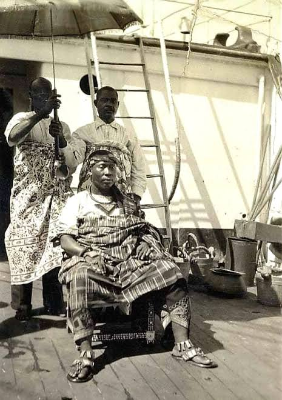
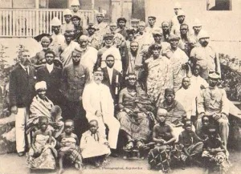

Boahen, Albert Adu. "Yaa Asantewaa in the Yaa Asantewaa War of 1900: Military Leader or Symbolic Head?" Ghana Studies 3, no. 1 (200): 111-135. https://doi.org/10.3368/gs.3.1.111.
Brempong, Arhin. "The Role of Nana Yaa Asantewaa in the 1900 Asante War of Resistance." Ghana Studies 3, no. 1 (2000): 97-110. https://doi.org/10.1353/ghs.2000.0004.
Arhin, Kwame. "The Political Military Roles of Akan Women." In Female and Male in West Africa, edited by C. Oppong. Allen & Unwin, 1983.
Fuller, Frances. A Vanished Dynasty: Ashanti. Frank Cass, 1921.
Tordoff, William. Ashanti Under the Prempehs. Oxford University Press, 1965.
The Exile of Asantehene Prempeh I: Throughout the nineteenth century, Asante resisted British attempts to undermine its sovereignty. In 1893, Asantehene Prempeh I rejected British demands that Asante become a protectorate. In January 1896, Governor Sir William Maxwell led a British expedition to Kumasi, arrested Prempeh I, his mother, and several prominent leaders, and sent them into exile, first to Elmina, then Sierra Leone, and eventually the Seychelles. Although the British declared Asante a protectorate, resistance to colonial domination continued.
The Golden Stool (Sika Dwa Kofi): The Golden Stool, known in Akan Twi as Sika Dwa Kofi, is the most sacred symbol of Asante unity, sovereignty, and spiritual identity. According to Asante oral traditions, it descended from the heavens through the spiritual intervention of Okomfo Anokye during the reign of Osei Tutu. Believed to embody the collective soul of Asanteman, it was never intended to be sat upon, even by the Asantehene. When Governor Frederick Hodgson demanded its surrender in March 1900, he challenged the very foundations of Asante political and spiritual authority.
Yaa Asantewaa as Osahene (War Leader): As Queen Mother of Ejisu, Yaa Asantewaa already exercised considerable political authority. Her emergence as osahene, or war leader, represented an additional responsibility. According to Asante historical traditions, she was selected to lead the resistance because of her courage, political judgment, and determination. Her military leadership was an achieved position, rather than one automatically conferred by her office as Queen Mother. She did not merely encourage men to fight but played a central role in organizing resistance against British conquest.
Women's Collective Political Leadership: Yaa Asantewaa did not act alone. She collaborated closely with Nana Amma Afranewaa, the Queen Mother of Offinso, an older and experienced political leader. Their collaboration demonstrates that women's political authority in Asante was neither unusual nor confined to exceptional individuals. Rather, it was rooted in established institutions through which women participated in governance, political decision-making, and the defense of their communities.
The Legacy of the Yaa Asantewaa War: Although British forces defeated the Asante resistance and exiled Yaa Asantewaa to the Seychelles, they never captured the Golden Stool. Asante political traditions and cultural identity survived colonial conquest. Through oral histories, songs, and collective memory, Yaa Asantewaa remains a powerful symbol of resistance. Her leadership reminds us that African women were not simply participants in history but political authorities and military leaders who helped shape its course.
Image 1: Statue of Yaa Asantewaa

Photo of the statue of Yaa Asantewaa outside the Yaa Asantewaa Museum, Ejisu, Ghana. Photo Credit: Asanteman Connects.
Image 2: The Golden Stool

Caption & citation for Image 2
Image 3: Map of the Asante Kingdom

Caption & citation for Image 3
Image 4: The Kumase Fort

Caption & citation for Image 4
Image 5: Asante king, Prempeh I

Caption & citation for Image 5
Image 6: Prempeh I and his suite in the Seychelles

Caption: Prempeh I and his suite in the Seychessles, taken by F.A.L. Ramseyer, ca. 1900-1903. Citation for Image 6